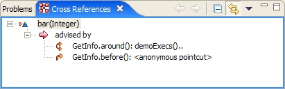
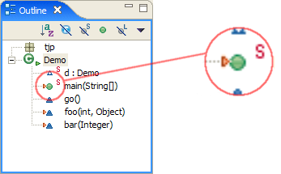
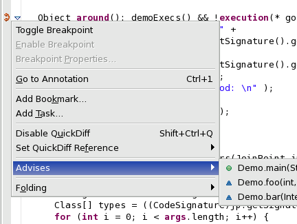
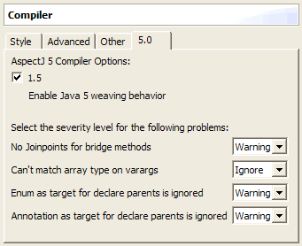
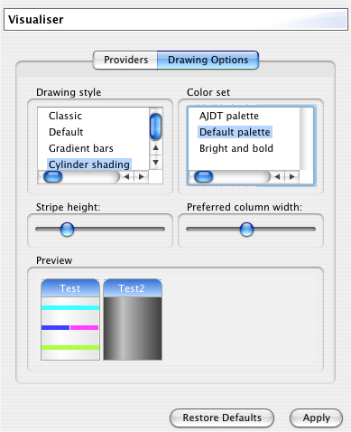

Overview
In addition to the inclusion of AspectJ 1.5.0M1 and various miscellaneous improvements, many of the changes in this milestone release are centred around the theme of closer and more consistent integration with Eclipse. We now encourage (and set as default) a new setup whereby the Java editor is always used for .java files, aspects are contained in .aj files, and the standard Java outline page is always used, all without loss of functionality. See the relevant sections below for the changes that have made this possible.
Being a milestone release, this is a work in progress, but feedback on these changes is very welcome. The newsgroup and mailing lists are the best places for this.
New Cross References view
This is a completely new view which shows how a given element is related to other elements. For example which advice is affecting a given method, or the places advised by a given piece of advice. The view tracks various selections, including single clicks in the package explorer and double clicks in the editor.
If you select a method, the cross references view shows you the relationships involving that method, plus any that involve code elements within the method (such as when the setting of a field is advised). If you select a class or aspect, you will see the relationships involving that class/aspect, plus any that involve the methods contained in the class/aspect.
The view supports navigation, so you can double-click on an element to open the containing resource in the editor, with that element selected.
Note: If upgrading from an earlier version of AJDT, you will need to rebuild any existing projects with this release, before any relationships will appear in this view.
Advice image decorator
An image decorator has been added to indicate which Java elements are being advised. A small orange arrow to the left of the icon is used, as shown in the enlargement below. This decorator is used anywhere that the standard Java decorator is used, which includes the package explorer, the Java outline view, the Cross Reference view, and the members view in the Java browsing perspective. A preference page option is available if you wish to disable this function.
Outline view improvements
The standard Java outline view shows the structure of your classes and aspects, just like in the package explorer. Instead of requiring a build like the custom outline view (which is now disabled by default), the view updates based on the eagerly parsed structure of the current document. Filters are available to hide various different types of element, such as pointcuts and advice. The same aspect structure is also shown in the in-place outline view in the AspectJ editor.

New advises markers
Markers are added to the left-hand gutter of the editor to indicate where advice will take effect at runtime (or may take effect, if there is a dynamic test to the pointcut). Firstly, these markers now appear when using the Java editor, not just with the AspectJ editor. Secondly, additional markers have been added at the source of these relationships, namely the advice itself. The icons used are flipped versions of the existing ones. Selecting the context menu from one of these markers will show an "Advises" menu, similar to the "Advised By" menu shown at the other end of the relationship. As well as being more consistent, these new markers provide an additional means of navigating the aspect-oriented structure of your code.
AspectJ 1.5.0M1
The first milestone release of AspectJ 5 is included, with all the accompanying documentation available in the Eclipse help system, including the AspectJ 5 Developer's Notebook.
A new preference page has been added to allow the setting of the new options available with the AspectJ 5 compiler.
Global incremental option
We encourage you to try out the incremental compilation mode. It's not as fast as we'd like, but it should work just fine, and still be quicker than a full build. To make activating this easier, we've moved the option to the new "Other" tab of the AspectJ compiler preference page, so that it can be set globally if desired.
Improved diagnostics
Now that AJDT is itself built with AspectJ, we can make use of its capabilities throughout the codebase. In addition to various enforcement and monitoring development-time aspects, we are now using aspects to improve our first failure data capture. This means our plugins are now much better at writing to the Eclipse .log file when an exception occurs, and more information is included in the log file.
Improved Mac OS X support
We don't usually have the resources to do much testing on this platform, but we have done some this time. We fixed a few bugs in AJDT and discovered an SWT bug which has since been fixed in the Eclipse 3.1 line.
Bug fixes
This release contains a fairly large number of bug fixes. The full list is available in Bugzilla. The more notable ones are:
- 70658 Advised by gutter annotation & context menu missing
- 71718 Setting breakpoints does not work
- 73859 Changing the aspect path etc should trigger a rebuild
- 74401 External jars on inpath not found on Linux
- 75373 problem-markers created by other builders disappear
- 75392 Visualiser doesn't always refresh after a build
- 75776 Deleting AJ project triggers a build which results in an NPE
- 76811 AJDT's project properties pages do not behave like JDT's
- 76903 Wrong classpath for ajdoc
- 77179 Build configurator error when renaming packages
- 77261 Shouldn't be able to include files from outside a source folder
- 77296 Visualiser handle click doesn't work with .aj files
- 77297 Visualiser shows duplicate entries with multiple source folders
- 77705 Visualiser menu checkboxes not working on the Mac
- 78023 Source format removes privileged keyword
- 78052 Eclipse 3.1M3 issues
- 78578 AJDT Preferences Configuration Wizard reappears
- 79979 Missing markers for declare parents
- 80060 Clean/Build Takes Extremely Long Time
Previous release
See also information about the previous release: